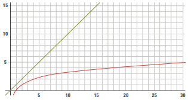

Uma das tarefas mais comuns em programação é encontrar uma informação específica dentro de um grande conjunto de dados. Imagine procurar uma palavra em um dicionário: você abriria na primeira página e leria palavra por palavra? Ou abriria no meio e decidiria para que lado ir? Esta aula apresenta duas estratégias para um computador fazer exatamente isso: a busca linear (o método sequencial) e a busca binária (o método inteligente).
Este é o método mais simples e intuitivo. Ele funciona como um detetive que verifica cada casa de uma rua, uma por uma, começando do número 1, até encontrar o que procura. Em um vetor, o programa começa no índice 0 e avança posição por posição, comparando cada elemento com o valor buscado.
int[] dados = { 52, 17, 69, 84, 3, 26, 83, 54, 19, 50 };
int valor_procurado = 54;
bool valor_encontrado = false;
for (int i = 0; i < dados.Length; i++)
{
if (dados[i] == valor_procurado)
{
Console.WriteLine("Valor encontrado no indice " + i);
valor_encontrado = true;
break; // Encerra o loop, pois já achamos o valor
}
}
if (!valor_encontrado)
{
Console.WriteLine("Valor não encontrado");
}
Para a Busca Binária funcionar, há uma condição OBRIGATÓRIA: o vetor precisa estar ordenado (do menor para o maior). Se o vetor estiver desordenado, o algoritmo não funcionará e dará resultados incorretos.
Este método usa a estratégia de "divisão e conquista", como ao procurar no dicionário:
int[] dados = { 3, 17, 19, 26, 50, 52, 54, 69, 83, 84 }; // Vetor OBRIGATORIAMENTE ordenado
int valor_procurado = 54;
bool valor_encontrado = false;
int inicio = 0;
int fim = dados.Length - 1;
int meio;
do
{
meio = inicio + (fim - inicio) / 2; // Calcula o índice do meio
if (dados[meio] == valor_procurado)
{
Console.WriteLine("Valor encontrado no índice " + meio);
valor_encontrado = true;
break;
}
else if (dados[meio] > valor_procurado)
{
fim = meio - 1; // Descarta a segunda metade
}
else
{
inicio = meio + 1; // Descarta a primeira metade
}
} while (inicio <= fim);
if (!valor_encontrado)
{
Console.WriteLine("Valor não encontrado");
}
Como podemos provar que um algoritmo é "melhor" que outro de forma objetiva? Usamos uma ferramenta matemática chamada Notação Grande O (Big O). Ela não mede o tempo em segundos, mas sim como a quantidade de operações (a "demora") de um algoritmo cresce à medida que a quantidade de dados de entrada (que chamamos de 'n') aumenta.
Lê-se "O de n". Isso significa que, no pior caso, o número de passos é diretamente proporcional ao número de elementos (`n`). Se o vetor tem 10 elementos, pode levar até 10 verificações. Se tiver 1 milhão de elementos, pode levar até 1 milhão de verificações. O crescimento é linear.
Lê-se "O de log de n". Esta é a grande vantagem. Significa que o número de passos cresce de forma muito lenta. Mesmo que você dobre o número de elementos, o número de passos no pior caso aumenta em apenas um. Para encontrar um item em um vetor com 1 milhão de elementos, a busca binária leva no máximo 20 passos!
O gráfico abaixo mostra a diferença: a linha da busca linear (função `n`) sobe de forma íngreme e constante, enquanto a linha da busca binária (função `log n`) fica quase plana, mostrando como ela é mais "escalável" para grandes volumes de dados.
Veja o seguinte vídeo para melhor entendimento sobre análise de algoritmos: link
A escolha entre os algoritmos depende do seu problema: